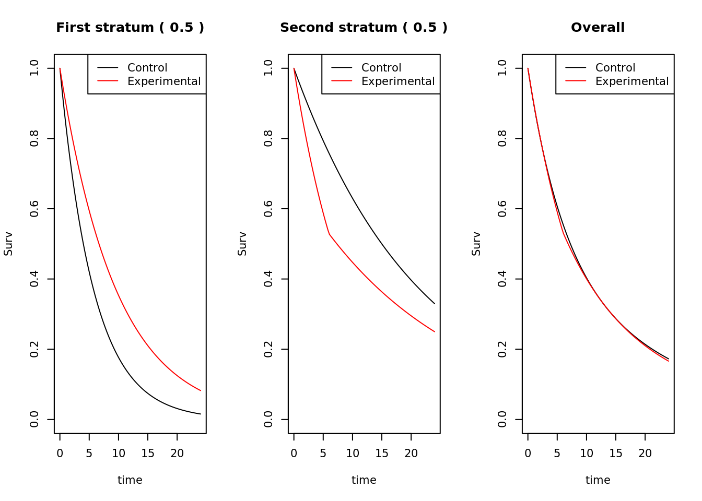
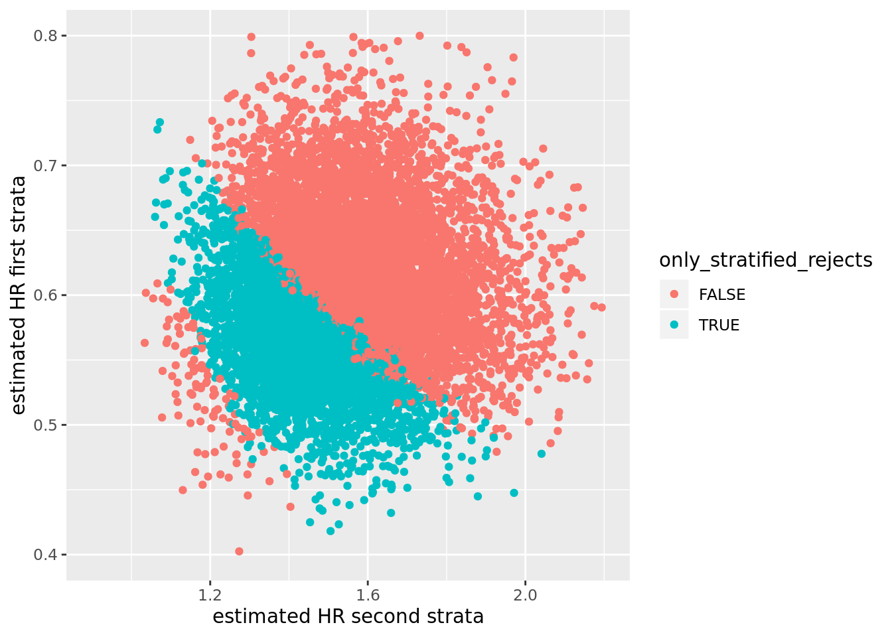

A stratified log-rank test does not control alpha for a marginal null hypothesis and that's ok
Recently, I’ve become interested in the robustness of standard statistical methods for RCTs under model misspecification. It seems to be a hot topic at the moment. I’d like to believe this is not such a big problem. I don’t think it is a big problem. But I’m trying to challenge my beliefs nevertheless.
Stratified log-rank test
The null hypothesis that is generally considered when performing an unstratified log-rank test is:
\[H_{0}: S_{E}(t) = S_{C}(t)\text{ for all }t>0\] where \(S_{E}\) and \(S_{C}\) denote the survival distributions on the experimental and control arms, respectively, in the full trial population. Personally, I prefer one-sided testing and a null hypothesis
\[\tilde{H}_{0}: S_{E}(t) \leq S_{C}(t)\text{ for all }t>0\]
but this is unconventional (strictly speaking, it’s harder to reject \(\tilde{H}_{0}\) than \(H_{0}\), but some might argue that \(\tilde{H}_{0}\) is still too easy to reject and we need a bigger null hypothesis space – a subject for another post). In any case, under some standard assumptions, an unstratified log-rank test controls \(\alpha\) when testing \(H_{0}\) or \(\tilde{H}_{0}\).
The null hypothesis that is generally considered when performing a stratified log-rank test is:
\[H_{0,S}: S_{E,i}(t) = S_{C,i}(t)\text{ for all }t>0\text{ and for all strata }i\] where \(S_{E,i}\) and \(S_{C,i}\) denote the survival distributions on the experimental and control arms, respectively, in the \(i\)th stratum. Again, I would prefer a one-sided version
\[\tilde{H}_{0,S}: S_{E,i}(t) \leq S_{C,i}(t)\text{ for all }t>0\text{ and for all strata }i.\]
A stratified log-rank test controls \(\alpha\) when testing \(H_{0,S}\) or \(\tilde{H}_{0,S}\), but a question some people might ask is: does a stratified log-rank test control \(\alpha\) when thought of as a test of \(H_{0}\) or \(\tilde{H}_{0}\)? (I’m not entirely convinced this is a sensible question, but let’s leave that aside).
The answer to the question is no. Below is a (rather extreme) example where the population consists of two equally sized strata. Under the control treatment, the first stratum has much poorer survival than the second stratum. The experimental treatment is beneficial in the first stratum and harmful in the second stratum. However, overall, marginally, the survival distributions on the two arms are practically the same (experimental very fractionally worse).

Now consider a trial in this population, where 1000 patients are recruited at a uniform rate for 12 months, and patients are subsequently followed-up for a further 12 months, making the total trial length 24 months, at which point all the survival times for all surviving patients are censored.
I simulated this trial 10,000 times, and the percentage of times that the stratified log-rank test (actually I used a stratified Cox model with treatment as the only covariate – all code below) produced a Z-value for the treatment term that was below the 2.5% quantile of the normal distribution (low values of Z favouring the experimental arm) was 38%. The percentage of times for the unstratified Cox model was 1%.
Is this a problem?
No I don’t think so. Firstly, there is no problem for the null hypotheses \(H_{0,S}\) or \(\tilde{H}_{0,S}\). Secondly, this is a very extreme violation of the assumptions of the stratified Cox model. Thirdly, consider the point estimates for the hazard ratios in the two strata in the subset of simulated data sets where the stratified log-rank test rejects and the unstratified log-rank test does not. These are highlighted in blue in the figure below. In these cases we would observe a point estimate between 0.5 and 0.7 in the first stratum, and a point estimate between 1.1 and 1.6 in the second stratum.
So I see this as more of a curiosity than a practical problem. It’s interesting to compare with logistic regression, where it’s been shown (here) that a stratified test controls \(\alpha\) not only for the stratified null but also for the overall trial population null (see also here). The same goes for continuous data analyzed by ANCOVA which I think is quite well known.
As a final comment, it’s important to keep in mind the efficiency gains from using a stratified test in more typical situations where its assumptions are reasonable.
Code
library(survival)
library(tidyverse)
## survival probability for a 2-piece exponential
surv_2 <- function(t,
lambda_1,
lambda_2,
t_star){
p_1 <- exp(-lambda_1 * t)
p_2 <- exp(-lambda_1 * t_star) * exp(-lambda_2 * pmax(0, (t - t_star)))
(t < t_star) * p_1 + (t >= t_star) * p_2
}
## function to plot the three survival distributions
plot_strat <- function(t_end = 24,
t_star_1 = 9,
t_star_0 = 9,
strat_1_rate_c_1 = log(2) / 4,
strat_1_rate_c_2 = log(2) / 4,
strat_1_rate_e_1 = log(2) / 4 * 0.6,
strat_1_rate_e_2 = log(2) / 4 * 0.6,
strat_0_rate_c_1 = log(2) / 15,
strat_0_rate_c_2 = log(2) / 15,
strat_0_rate_e_1 = log(2) / 15 * 1.1,
strat_0_rate_e_2 = log(2) / 15 * 1,
prop_strat_1 = 0.1){
t_seq <- seq(0, t_end, length.out = 100)
s_c_1 <- surv_2(t_seq, lambda_1 = strat_1_rate_c_1, lambda_2 = strat_1_rate_c_2, t_star = t_star_1)
s_e_1 <- surv_2(t_seq, lambda_1 = strat_1_rate_e_1, lambda_2 = strat_1_rate_e_2, t_star = t_star_1)
s_c_0 <- surv_2(t_seq, lambda_1 = strat_0_rate_c_1, lambda_2 = strat_0_rate_c_2, t_star = t_star_0)
s_e_0 <- surv_2(t_seq, lambda_1 = strat_0_rate_e_1, lambda_2 = strat_0_rate_e_2, t_star = t_star_0)
par(mfrow = c(1,3))
plot(t_seq, s_c_1, type = "l", ylim = c(0,1), xlab = "time", ylab = "Surv",
main = paste("First stratum (", prop_strat_1,")"))
points(t_seq, s_e_1, type = "l", col = 2)
legend("topright", c("Control", "Experimental"), lty = c(1,1), col = c(1,2))
plot(t_seq, s_c_0, type = "l", ylim = c(0,1), col = 1, lty = 1, xlab = "time", ylab = "Surv",
main = paste("Second stratum (", 1 - prop_strat_1,")"))
points(t_seq, s_e_0, type = "l", col = 2, lty = 1)
legend("topright", c("Control", "Experimental"), lty = c(1,1), col = c(1,2))
plot(t_seq, prop_strat_1 * s_c_1 + (1 - prop_strat_1) * s_c_0, type = "l", ylim = c(0,1), xlab = "time", ylab = "Surv", main = "Overall")
points(t_seq, prop_strat_1 * s_e_1 + (1 - prop_strat_1) * s_e_0, type = "l", col = 2)
legend("topright", c("Control", "Experimental"), lty = c(1,1), col = c(1,2))
}
## plot the three survival distributions
plot_strat(t_end = 24,
t_star_1 = 9,
t_star_0 = 6,
strat_1_rate_c_1 = log(2) / 4,
strat_1_rate_c_2 = log(2) / 4,
strat_1_rate_e_1 = log(2) / 4 * 0.6,
strat_1_rate_e_2 = log(2) / 4 * 0.6,
strat_0_rate_c_1 = log(2) / 15,
strat_0_rate_c_2 = log(2) / 15,
strat_0_rate_e_1 = log(2) / 15 * 2.3,
strat_0_rate_e_2 = log(2) / 15 * 0.9,
prop_strat_1 = 0.5)## function for simulating from a piece-wise exponential distribution
t_piecewise_exp <- function(n = 10,
change_points = c(6, 12),
lambdas = c(log(2) / 9, log(2) / 9, log(2) / 9)){
t_lim <- matrix(rep(c(diff(c(0, change_points)), Inf), each = n), nrow = n)
t_sep <- do.call(cbind, purrr::map(lambdas, rexp, n = n))
which_cells <- t(apply(t_sep < t_lim, 1, function(x){
rep(c(T,F), c(min(which(x)), length(x) - min(which(x))))
} ))
rowSums(pmin(t_sep, t_lim) * which_cells)
}
## function to simulate trial data (uncensored)
sim_t_uncensored <- function(model,
recruitment){
rec_0 <- recruitment$r_period * runif(recruitment$n_0) ^ (1 / recruitment$k)
rec_1 <- recruitment$r_period * runif(recruitment$n_1) ^ (1 / recruitment$k)
time_0 <- t_piecewise_exp(recruitment$n_0, model$change_points, model$lambdas_0)
time_1 <- t_piecewise_exp(recruitment$n_1, model$change_points, model$lambdas_1)
data.frame(time = c(time_0, time_1),
rec = c(rec_0, rec_1),
group = rep(c("control", "experimental"), c(recruitment$n_0, recruitment$n_1)))
}
## function to apply a data cut off to uncensored data set
apply_dco <- function(df,
dco = NULL,
events = NULL){
if (is.null(dco) && is.null(events)) stop("Must specify either dco or events")
df$cal_time <- df$time + df$rec
if (is.null(dco)){
dco <- sort(df$cal_time)[events]
}
df_dco <- df[df$rec < dco, ]
df_dco$event <- df_dco$cal_time <= dco
df_dco$time <- pmin(df_dco$time, dco - df_dco$rec)
df_dco$dco <- dco
df_dco
}
## function to simulate and analyze a single trial
sim_1_trial <- function(dummy,
model_1, ## strata 1
model_0, ## strata 0
recruitment_1,
recruitment_0){
df_uncensored_1 <- sim_t_uncensored(model_1, recruitment_1)
df_uncensored_0 <- sim_t_uncensored(model_0, recruitment_0)
df_final_1 <- apply_dco(df_uncensored_1, dco = 24)
df_final_0 <- apply_dco(df_uncensored_0, dco = 24)
df_final_1$cov <- "1"
df_final_0$cov <- "0"
df_final <- rbind(df_final_1, df_final_0)
cox_str <- summary(coxph(Surv(time, event) ~ group + strata(cov), data = df_final))
cox_unstr <- summary(coxph(Surv(time, event) ~ group, data = df_final))
cox_0 <- summary(coxph(Surv(time, event) ~ group, data = df_final %>% filter(cov == "0")))
cox_1 <- summary(coxph(Surv(time, event) ~ group, data = df_final %>% filter(cov == "1")))
data.frame(z_str = cox_str$coefficients[1,"z"],
z_unstr = cox_unstr$coefficients[1,"z"],
hr_1 = cox_1$coefficients[1,"exp(coef)"],
hr_0 = cox_0$coefficients[1,"exp(coef)"])
}
## specify recruitment
recruitment_1 = list(n_0 = 250, n_1 = 250, r_period = 12, k = 1)
recruitment_0 = list(n_0 = 250, n_1 = 250, r_period = 12, k = 1)
## specify models
model_1 = list(change_points = c(9),
lambdas_0 = c(log(2) / 4, log(2) / 4),
lambdas_1 = c(log(2) / 4 * 0.6, log(2) / 4 * 0.6))
model_0 = list(change_points = c(6),
lambdas_0 = c(log(2) / 15, log(2) / 15),
lambdas_1 = c(log(2) / 15 * 2.3, log(2) / 15 * 0.9))
set.seed(352)
res <- purrr::map_df(1:10000,
sim_1_trial,
model_1 = model_1,
model_0 = model_0,
recruitment_1 = recruitment_1,
recruitment_0 = recruitment_0)
## rejections from stratified test
mean(res$z_str < qnorm(0.025))## [1] 0.3774## rejections from unstratified test
mean(res$z_unstr < qnorm(0.025))## [1] 0.0111## plot hazard ratios by strata
res <- res %>% mutate(only_stratified_rejects = z_str < qnorm(0.025) & z_unstr > qnorm(0.025))
ggplot(res, aes(x = hr_0, y = hr_1, colour = only_stratified_rejects)) +
geom_point() +
xlab("estimated HR second strata") +
ylab("estimated HR first strata") +
scale_x_continuous(limits = c(0.9, 2.2)) +
scale_y_continuous(limits = c(0.4, 0.8)) 